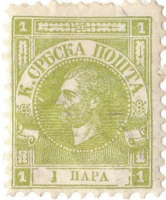
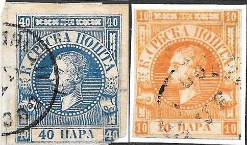
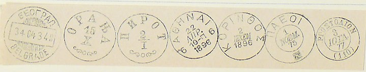
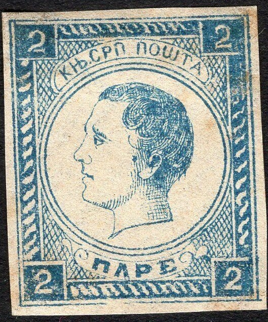

Serbie - Serbien
Return To Catalogue - Serbia 1901-1919 - Miscellaneous -Yugoslavia - Austrian military post in Serbia - Serbian occupation of Baranya and Temesvar (Hungary).
Note: on my website many of the
pictures can not be seen! They are of course present in the
catalogue;
contact me if you want to purchase the catalogue.
1 p green (newspaper stamp, exists imperforated, 1868) 2 p brown (newspaper stamp, exists imperforated, 1868) 10 p orange 20 p red 40 p blue
The 10, 20 and 40 p exist in two printings, the so-called Vienna printing and the Belgrade printing. The newspaper stamps (1 p and 2 p) usually remained uncancelled. The 2 p exists with misprint "PAPF" instead of "PAPE".
Value of the stamps |
|||
vc = very common c = common * = not so common ** = uncommon |
*** = very uncommon R = rare RR = very rare RRR = extremely rare |
||
| Value | Unused | Used | Remarks |
| Vienna printing, perforated 12 | |||
| 10 p | RR | RR | |
| 20 p | R | *** | |
| 40 p | RR | R | |
| Belgrade printing, perforated 9 1/2 | |||
| 10 p | R | R | thin paper |
| 20 p | *** | *** | thin or thick paper |
| 40 p | *** | *** | thin or thick paper |
| Newspaper stamps, perforated 9 1/2 | |||
| 1 p | *** | RR | |
| 2 p | *** | RR | |
| Newspaper stamps, imperforate | |||
| 1 p | *** | RR | |
| 2 p | *** | RR | |
Cancels, example:

"NAPLACENO" (postage paid) in an ellipse
"NAPLACENO" cancel in a rectangle, this cancel also
exists without such a rectangle.
The genuine stamps should have 77 pearls in the circle around the head. At the right hand side of the head 16 white lines should be visible at the right hand side and 19 white lines at the left hand side.
Three forgeries are described in Album Weeds:
 


1st forgery of Album Weeds. The cancel of the 40 pa stamp can
also be found on forgeries of other countries, click here for more information.

(1st forgery of Album Weeds)
1) There are only 59 pearls in the circle and 16 white lines to the right of the head and 17 to the left. This forgery can often be found imperforated. The shape of the top of the "K" in "CPbCKA" is too low.

(Fohl forgery, 74 pearls)
2) This forgery has 74 pearls in the circle and is made by the forger Fohl. It has 15 white lines to the right of the head and 16 to the left. The eye is very curious. The "P" of "POMTA" has no bar across the top. The "P" of "PARA" also doesn't have a bar across the top. A large quantity of these forgeries was discovered and distributed with stamp journals (see Cd 1 for more details), they were all overprinted "Falsch!" (= 'forged' in German).


(Second Fohl forgery)
3) This forgery has 80 pearls in the circle and is also made by the forger Fohl. It has 16 white lines to the right of the head and 17 to the left. As in the second forgery, the "P" of "POMTA" and the "P" of "PARA" don't have a bar across the top. A large quantity of these forgeries was discovered and distributed with stamp journals (see Cd 1 for more details), they were all overprinted "Falsch!" (= 'forged' in German).


This forgery pair was made by Oneglia. It has a typical bars with
"G" cancel that was often used by Oneglia. These
forgeries were listed in Oneglia's 1906 pricelist.
'Reproduction' made for the Salon der Philatelie in Hamburg in
1984

Zoom-in of this 'reproduction'


Perforated 1 p yellow 10 p brown 10 p orange (1878) 15 p orange 20 p blue 25 p red 35 p green 40 p violet 50 p green Imperforated (1872?)

1 p yellow
These perforated stamps were printed on thick or thin paper. Many different perforations exist, varying from 9 1/2 to 12 1/2. Different printings resulted in different colour shades (this is a field for the specialist).
Value of the stamps |
|||
vc = very common c = common * = not so common ** = uncommon |
*** = very uncommon R = rare RR = very rare RRR = extremely rare |
||
| Value | Unused | Used | Remarks |
| Perforated | |||
| 1 p | *** | R | |
| 10 p brown | *** | ** | |
| 10 p orange | * | * | |
| 15 p | R | *** | |
| 20 p | ** | * | |
| 25 p | * | * | |
| 35 p | * | * | |
| 40 p | * | * | |
| 50 p | * | ** | |
| Imperforate | |||
| 1 p | ** | ** | A tete-beche pair was probably made on purpose for the famous collector Ferrari. |

A Paquebot cancel.
(Forgeries, reduced sizes)
Forgeries of the above stamps exist. In the genuine stamps there should be 14 white twists in the bottom frame, the forgeries only have 13 white twists. In the forgeries, there is also a white outline at the back of the neck all the way to the bottom, which is not present in the genuine stamps.


2 p black
Value of the stamps |
|||
vc = very common c = common * = not so common ** = uncommon |
*** = very uncommon R = rare RR = very rare RRR = extremely rare |
||
| Value | Unused | Used | Remarks |
| 2 p | ** | *** | Type 1 |
| 2 p | c | - | Type 2, "T" damaged, 'used' stamps mostly cancelled to order |

Mystery stamp 2 p blue in a slightly different design; proof or
forgery?

5 p green 10 p red 20 p orange 25 p blue 50 p brown 1 D violet
The perforation of these stamps is 13 x 13 1/2.
Value of the stamps |
|||
vc = very common c = common * = not so common ** = uncommon |
*** = very uncommon R = rare RR = very rare RRR = extremely rare |
||
| Value | Unused | Used | Remarks |
| 5 p | c | c | |
| 10 p | c | c | |
| 20 p | c | c | |
| 25 p | c | c | |
| 50 p | c | * | |
| 1 D | * | * | |
I have seen a postcard 5 p brown on lilac in the same design ("DOPNCHA KAPTA").

5 p green 10 p red 15 p violet 20 p orange 25 p blue 50 p brown 1 D violet
These stamps are peforated 13 x 13 1/2. Imperforated stamps exist, but are probably printers waste.
Value of the stamps |
|||
vc = very common c = common * = not so common ** = uncommon |
*** = very uncommon R = rare RR = very rare RRR = extremely rare |
||
| Value | Unused | Used | Remarks |
| 5 p | c | c | |
| 10 p | c | c | |
| 15 p | c | c | |
| 20 p | c | c | |
| 25 p | c | c | |
| 50 p | * | * | |
| 1 D | ** | ** | |

1 p brown 5 p green 10 p red 15 p lilac 20 p orange 25 p blue 50 p brown 1 D green 1 D brown on blue Overprinted

'10 napa' on 20 p red '15 napa' on 1 D brown on blue
All these stamps were issued with perforation 13 x 13 1/2, the values 1 p, 5 p and 10 p also exist with perforation 11 1/2. Specialists distinghuish between the first issue on granite paper and the second issue of 1898 on normal paper. Imperforated stamps exist, but are probably printers waste.
Value of the stamps |
|||
vc = very common c = common * = not so common ** = uncommon |
*** = very uncommon R = rare RR = very rare RRR = extremely rare |
||
| Value | Unused | Used | Remarks |
| 1 p | c | c | 1896 |
| 5 p | c | c | |
| 10 p | c | c | |
| 15 p | * | c | |
| 20 p | ** | c | |
| 25 p | ** | c | |
| 50 p | ** | * | |
| 1 D green | c | * | |
| 1 D brown on blue | *** | ** | 1896 Exists cancelled to order: * |
| Surcharged | |||
| 10 p on 20 p | c | c | Two types, exists cancelled to order |
| 15 p on 1 D | ** | * | |

{kind=link}
{kind=link}
{kind=link}
{kind=link}
{kind=link}